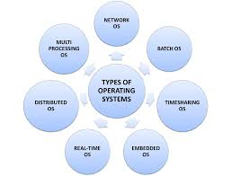

<-
OPERATING SYSTEM
An Operating System(OS) is software that manages and handles the
hardware and software resources of a computer system.
This Operating System tutorial will cover all the basic to advance
operating system concepts like System Structure, CPU Scheduling,
Deadlock, file and disk management, and many more.
TYPES OF OPERATING SYSTEM
Batch Operating System
Multi-Programming System
Multi-Tasking Operating System
Time Sharing Operating System
Distrubited Operating System
